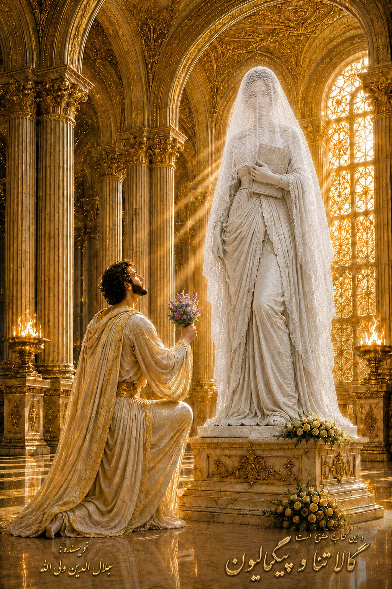

و این کتاب عشق است؛ گالاتئا و پیگمالیون
نویسنده: جلالالدین ولیالله
ناشر: انتشارات صالحین
این رمان با نگاهی به عشق، زیبایی، خیال، هنر و روابط انسانی، داستان پیگمالیون و جستوجوی او برای یافتن محبوب آرمانی را در قالب هفت قسمت روایت میکند.
دربارهٔ کتاب
در بارة این کتاب:
و این کتاب عشق است. کتابی با نگاهی بینالمللی به عشق است. عشق چیست؟ چه دیدگاهها و تعاریفی از عشق از نظر انسان وجود دارد؟ چه رابطهای بین عشق و روابط زناشویی وجود دارد؟ آیا عشق همان لذائذ جنسی است؟ چه در عشق دو دلداده و چه در عشق به نوع بشر و تعالی اخلاق و جامعهٔ او، چه موانعی در راه رسیدن به عشق وجود دارد؟ آیا هرچه بلوغ فکری و عاطفی انسان تکاملیافتهتر باشد، عشق او واقعیتر و عمیقتر است؟ چه رابطهای بین تعالی فردی و تعالی جوامع انسانی، تمدن بشری و عشق وجود دارد؟
عشق مجازی چیست؟ آیا عشق مجازی در تعالی عقلانی و فکری و تعمیق احساسات و عواطف روانی انسان نقش دارد؟ آیا همانگونه که انسان در راه رسیدن به رشد فیزیکی و بدنی دارای مراحل تکاملی است، در درک عشق و حس آن نیز مراحل تکامل عقلی و معنوی وجود دارد؟ عشق چه نقش روانشناختی در آرامش روح و روان انسان دارد؟ آیا عشق میتواند موتور پیشران و محرک تمام قوای پنهان انسان باشد که زندگی و ملزومات آن را بسازد؟ آیا عشق نیروبخش و حیاتآفرین است؟ آیا همانگونه که ارکان زندگی دو زوج با عشق ساخته و هموار میشود، در ساختن مدینهٔ فاضله و آرمانهای متعالی اجتماعات بشری نیز عشق میتواند بنیاد و زیربنا باشد؟ چگونه عشق عالمگیر میشود؟
زیبایی چیست؟ چرا هرکس درک و تعریف خود را از زیبایی دارد؟ آیا زیبایی خود فضیلت است؟ عشقهای موهوم و بیمارگونه کدامند؟ آیا عشق میتواند نوعی بیماری روانی باشد؟ چه رابطهای بین پاکی، فضیلت، پرهیزکاری و عشق واقعی وجود دارد؟ آیا عشق در همهٔ ذرات عالم جاری است؟ قصه و داستان و رمان چه نقشی در ساختن ساختار تخیل و تفکرات انسانی دارد؟
آیا تکامل نوع بشر از نقطهای آغاز شده که به شرح ماجراهای خود، قصهگویی و داستانسرایی پرداخت و این ماجراها و تجربیات و داستانها را نسل به نسل به آیندگان منتقل کرد؟ آیا بین مغز ما و مغز افلاطون، و احساس ما و احساسات افلاطون و ارسطو تفاوت معنیداری وجود دارد؟ قصه و داستان کدام بخش معارف بشری را پوشش میدهند؟ چه رابطهای بین هنر و عشق وجود دارد؟ چه رابطهای بین عقل و عشق وجود دارد؟ نهایت التذاذ معنوی عشق به کجا میانجامد؟
آیا عشق میتواند درمان بسیاری از دردهای اجتماع و فرد باشد یا این یک اغراق شاعرانه است؟ اغراق چه تأثیری در به جنبش درآوردن انسان در اقدامهای او دارد؟ سرنوشت چیست و به چه عواملی بستگی دارد؟ آزادی و اختیار چه نقشی در تعالی انسان دارند؟ چه رابطهای بین آزادگی و تعالی عشق وجود دارد؟ اینها و بسیاری دیگر از پرسشهایی هستند که در این کتاب به بخشی از آنها پاسخ داده شده است.
این کتاب مراحل تکامل جوانی پیکرتراش به نام پیگمالیون را به تصویر کشیده است. در هفت خوان عشق، از طریق قصههای کودکانه و خیالانگیز سوررئالیستی تا وقایع اجتماعی و طرح معضلات و موانع پیشرفتهای اجتماعی، سرشار از قصههای عشق و وفاداری، پند و اندرز و راهکار و برونرفت از بنبستهای فکری، روانی و اجتماعی است.
قصهٔ عشق
قصهٔ عشق یکی بیش نیست وین عجب
از هر کسی که میشنوم نامکرر است (حافظ).
و این کتاب عشق است. داستان عشق و دلدادگی و سرمستی و مهجوری و محضوری و قرار و بیقراری است. غم هجران است و شادی وصال و شیوهٔ تداوم هستی و زندگی است. جلوههای یار و تجلیهای بسیار دلدار است. نقش و خط و خال خوش دلآرام است و دل تنگ و مشتاق و لرزان و بیقرار یار. یادگاری از صدای سخن عشق است.
از صدای سخن عشق ندیدم خوشتر
یادگاری که در این گنبد دوار بماند.
اسطورهٔ پیگمالیون یکی از جذابترین داستانهای اساطیری یونان است که همواره الهامبخش هنرمندان، نویسندگان و اندیشمندان بوده است. این داستان دربارهٔ پیگمالیون، پادشاه و مجسمهساز ماهر قبرسی است که به دلیل کمالگرایی و عشق عمیق به هنر، بهجای دلبستن به یک انسان واقعی، عاشق اثری میشود که خود خلق کرده است.
داستان گالاتئا و پیگمالیون، داستان همهٔ ماست. هریک از ما نقشی از موجودی زیبا و منحصربهفرد در وجود خود داریم که از قبل در هستی ما تعبیه شده است و بیقراری ما از فراق و جستوجوی اوست. گالاتئا و پیگمالیون در وجود هرکسی موجودی خاص اوست، متناسب با روحیات او. اگر مرد باشیم آن نقش یک زن است و اگر زن باشیم آن نقش یک مرد است. نقشی زیبا در وجود و ناخودآگاه ماست که تمام عمر به دنبال آن میگردیم.
داستان پیگمالیون و گالاتئا داستانی است که زمان و مکان نمیشناسد. گرچه در قالب یکی از افسانهها و اسطورههای یونان باستان است، داستانی جهانی و فرامرزی متعلق به همهٔ ملتها و اقوام است. این داستان انسان است؛ داستان عشق و دلدادگی؛ عشقی ابدی و جهانی.
در گذشته روایتهایی از این قصه شکل گرفته است. هر راوی به فراخور زاویهٔ نگاه خود به عالم، به آن نگریسته است. در روایت اولیه که اووید، شاعر رومی، در کتاب دگردیسیها نگاشته است، پیگمالیون زن محبوب خود را نمییابد و بهجای آن، متناسب با انتظارات خود، مجسمهای میسازد. او عاشق پیکری میشود که از ذهن او تجلی یافته و خود آن را تراشیده، پیرایش و پردازش و آرایش کرده است.
برنارد شاو، نویسندهٔ انگلیسی، در قرن نوزدهم روایت دیگری از این داستان ارائه داده است. در ایران نیز صادق هدایت روایتی از این داستان با نام «عروسک پشت پرده» نوشته است. این روایتها بخشی از میراث فرهنگ و تمدن بشریاند و هرکدام از زاویهای به رابطهٔ خیال و واقعیت، عشق و زندگی و آرمانهای انسان مینگرند.
این روایت نگاهی واقعگرایانه و درعینحال رمانتیک به ماجرا دارد و مقدمهای از نگاه فلسفی و عرفانی به عشق است. از این دیدگاه، ازدواج میتواند کارگاهی برای تحول باشد؛ جایی که دلبستگی به زیباییهای ظاهری بهتدریج به عشق به زیباییهای معنوی، روانی و اخلاقی گرایش مییابد.
زندگی سفری است برای یافتن. هر یک از ما آن پیکرهٔ زیبا و منحصربهفرد را نخست در خانه و کارگاه دل و در آسمان خیال خود مینگریم و آرزو میکنیم که روزی او را ملاقات کنیم تا در کنار او خوشبخت شویم و در طی طریق این عالم به عالم فراگیر عشق رهسپار شویم.
این مجموعه شامل قصهها، داستانها و ماجراهایی است که برای بزرگسالان، نوجوانان و جوانان نوشته شدهاند. در این کتاب علاوه بر شعر و ماجرا و بحثهای فلسفی و عرفانی، داستان جن و پری و ارواح و شهر قصههای مادربزرگ نیز وجود دارد. این اثر تلاشی برای درک عشق و تفاهم متقابل و تحمل یکدیگر در رهسپاری به سوی صلح و مهر پایدار است.
آنچه میگویم بقدر فهم توست
مُردم اندر حسرت فهم درست (مولانا)
مشخصات کتاب
فهرست قصهها و مطالب
برای نمایش یا پنهان کردن فهرست کامل کتاب کلیک کنید
ورود به معرفی هفت قسمت کتاب
- قسمت اول: عشق مروارید
- قسمت دوم: عشق آرتیمسیا
- قسمت سوم: عشق هلن
- قسمت چهارم: عشق رویا
- قسمت پنجم: عشق کراتیا
- قسمت ششم: عشق الکترا
- قسمت هفتم: عشق گالاتئا و پیگمالیون
فهرست قصهها و مطالب کتاب
- قصه عشق
- پیگمالیون
- کودکی پیگمالیون
- قصه ارواح در پشت بام حمام
- پدر بزرگ و مادر بزرگ
- قصه دنیای شیرین
- حکمت پدر بزرگ
- قصههای مادر بزرگ
- قصة ماهرو و آرش
- دنیای قصهها
- عشق در نگاه پدر بزرگ
- عقل و عشق در نظر مادر بزرگ
- چهارده سالگی پیگمالیون
- مروارید
- قصه عروسک مروارید
- داستان مرگ پیگمالیون
- قصة شهر ارواح
- قصة عروسکی برای مروارید
- شکوه مادر
- خواهری چون برلیان
- برلیان جواهری در کنار برادر
- سحر کلام
- قدرت قصه
- خبر آمدن مروارید
- عشق از دیدگاه برلیان
- قصة عشق مروارید
- فراغ مروارید
- خیال مروارید
- قصة عشق آرتمیسیا
- رویارویی با عالیجناب عشق
- شهر چشمان آرتیمسیا
- خواب و خیال آرتمیسیا
- خواستگاری آرتیمسیا
- قصة عشق هلن
- جلوة هلن
- چگونه میتوان یک دوشیزه را به خود علاقمند کرد؟
- دیدار با هلن
- داستان هلن زیباترین زن دنیا
- اسطورة هلن، شاهزادة دو سرزمین
- زیبایی از نظر پیگمالیون
- درد فراق هلن
- یاد هلن
- باغ بهشت
- هلن در کشتی
- پدرو
- هجران هلن
- هیاهوی هلن در کشتی
- در فراغ هلن
- نامة از هلن
- قصة عشق رویا
- رویا
- نمایشنامه ازدواج تولد مکرر
- مسئله این است کدامیک؟ دارا یا زارا؟
- رویا در چشمان پیگمالیون
- نقش رویا
- دیدار رویا
- نشان عشق، والاترین نشان
- احساس رویا
- احساس پیگما
- دیدار برلیان با رویا
- پایان رویا
- قصة عشق کراتیا
- مردمان شهر گزنوس
- گستره عشق
- مردمان گزنوس چه کسانی بودند؟
- عشق و آزادی
- پیگمالیون در شهر گزنوس
- پدیدهای به نام کراتیا
- جلوه نیکوکراتیا
- گفتگوی کراتیا و پیگما
- مرام کراتیا
- نقشی از کراتیا
- دوستی دیرینه کراتیا و برلیان
- هماورد کراتیا و پیگما
- کراتیا که بود؟!
- خیال کراتیا
- جزیره ناشناختهای به نام کراتیا
- عشق در نظر کراتیا
- جهان گستری عشق
- اسرار نهان
- زن کودن
- علت عشق
- قصة چرخ گردون
- فیلفوس
- دیدار با فیلفوس
- شبنشینی نخبگان
- آیا در عالم الههای هست؟
- قصة عشق لیلی و راز فیلفوس
- قصة هیرون و کیمیون
- دو عامل موفقیت
- چشمة شفا بخش
- قصه هرون مخوف و چشمة مرگ
- قصه عشق هیرون و ایوا
- باران عشق نفرت را میزداید
- درة مرگ
- تداوم عشق ایرا و خوشبختی هیرون
- مرگ عشق در هیرون و دگردیسی او
- قصة سوزناک فراغ ایوا
- مستی عشق
- سزای مجرمین
- هیرون مخوف
- قصة عشق فدرا
- عشق به مردم
- یک شب هولناک
- سدبانان
- هفاستوس
- قیام هفاستوس
- اواغوراس
- خواستگاری کراتیا
- در تمنای کراتیا
- عشق و هنر
- شکوه کراتیا
- عشق و فهم درست
- قصة عشق الکترا
- احساس الکترا
- جلوه الکترا
- شرح عقل و عشق
- عشق خواهر به برادر
- برلیان و پیگما
- الکترا نماد عشق و عقل
- اندیشمندان زمین
- قصه بت چین و امپراطور لیو هنگ
- سرانجام عشق بت چین و امپراطور چین
- بت چین که بود؟
- سفر عشق
- راهنمایان بشر
- اما لوجیا که بود؟
- عشق از نظر بت چین
- الکترا در قصر خود
- روایت الکترا از عشق
- داستان فانوس
- قصة هیرو و لیاندر
- عشق و شهوت، دو داستان واقعی
- قصة عشق ونوس و زنون
- قصة هرا، تجسمی از غلبة شهوت
- فرمانده هگساندروس
- و اما هرا که بود؟
- زشتی تجاوز
- خوشبختی یا موفقیت
- مزرعه عقاب کوه
- داستان شاهزاده و کاتب دربار
- قصة عشق مهرانگیز و رادمهر
- عشق از نگاه رادمهر
- عشق از نگاه مهرانگیز
- دوران هجران و جدایی دو دلداده
- مباحثه دو دلدادة دیگر
- قدرت عشق و زیبایی
- قدرت عزم و اراده
- سحر زبان خوش
- مکاشفة اندیشمندان زمین
- فرهنگها و زنان
- روند تکامل اجتماعات بشری
- خانه دی یو نیسوس و آیون
- عالم گیری عشق
- غروب الکترا
- قصة عشق ونوس
- پایان سخن
- پایان
خرید در ایران و درخواست نسخهٔ چاپی یا PDF
برای دریافت نسخهٔ چاپی کتاب یا فایل PDF هر یک از قسمتها، مبلغ مربوط را طبق فهرست زیر پرداخت کنید. برای نسخههای چاپی، هزینهٔ پست داخل ایران برابر با ۳۰ درصد قیمت کتاب محاسبه میشود. پس از پرداخت، رسید واریز را همراه با درخواست، نشانی دقیق، کد پستی و شمارهٔ تلفن ارسال کنید.
نسخهٔ چاپی معمولی
قطع وزیری؛ ۵۵۰ صفحه؛ جلد رنگی و بدون تصویر رنگی داخل کتاب.
هزینهٔ پست (۳۰٪): ۶۰۰٬۰۰۰ تومان
مبلغ با پست: ۲٬۶۰۰٬۰۰۰ تومان
درخواست نسخهٔ چاپی معمولینسخهٔ چاپی مجلل
قطع وزیری، همراه با تصاویر رنگی در قسمتهای کتاب.
هزینهٔ پست (۳۰٪): ۱٬۲۰۰٬۰۰۰ تومان
مبلغ با پست: ۵٬۲۰۰٬۰۰۰ تومان
درخواست نسخهٔ چاپی مجللمجموع هر هفت قسمت PDF
دریافت هر هفت قسمت کتاب بهصورت فایل PDF
روش پرداخت و ثبت درخواست
شماره شبای بانک سپه:
IR0201500000150501481687
به نام: لاله قارونی
پس از واریز، این اطلاعات را ارسال کنید:
- تصویر یا سند واریز وجه؛
- عنوان نسخهٔ چاپی یا شمارهٔ قسمت PDF درخواستی؛
- نام و نام خانوادگی گیرنده؛
- نشانی دقیق پستی و کد پستی؛
- شمارهٔ تلفن همراه برای هماهنگی و پیگیری.
درخواست و رسید پرداخت را به ایمیل رسمی انتشارات بفرستید و سپس برای پیگیری پیامک ارسال کنید. فایل PDF یا نسخهٔ چاپی پس از بررسی پرداخت و اطلاعات ارسالی، مطابق درخواست ارسال خواهد شد.
ایمیل انتشارات: salhin.publications@proton.me
شمارهٔ پیامک و پیگیری: 09125791009
ارسال به خارج از ایران
برای متقاضیان خارج از ایران، کشور و نشانی مقصد را بهطور کامل در درخواست بنویسید تا دربارهٔ هزینهٔ ارسال و روش تهیهٔ کتاب هماهنگی شود.
دکمههای درخواست در این صفحه به راهنمای سفارش میروند؛ ثبت سفارش بهصورت خودکار انجام نمیشود. رسید و مشخصات باید از طریق راههای ارتباطی انتشارات ارسال شوند.
فروش جهانی
نسخهٔ چاپی بینالمللی
برای اطلاع از قیمت و روش ارسال بینالمللی با انتشارات تماس بگیرید.
اطلاعات فروش جهانیتحلیل و نقد و نظر صاحبنظران و خوانندگان
برای مطالعهٔ نقدها، تحلیلها و دیدگاههای صاحبنظران و خوانندگان دربارهٔ کتاب، از پیوند زیر استفاده کنید.
حقوق نشر
کلیهٔ حقوق چاپ، نشر، تکثیر، اقتباس، نشر الکترونیکی و فروش این اثر بر اساس قوانین مربوط متعلق به نویسنده و انتشارات صالحین است.
چاپ، نشر و توزیع از انتشارات صالحین.
شمارهٔ تلفن توزیع و فروش: 09125791009